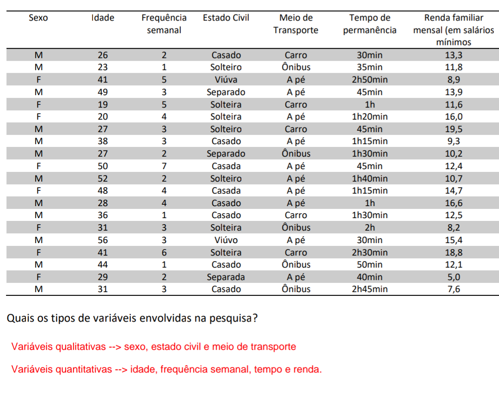

São técnicas e médotos para pesquisa. Ele apresenta processos próprios para coletar e apresentar os dados. Existe a Estatística Descritiva e Inferencial.
Descritiva: descreve, organiza e apresenta dados através de tabelas, gráficos e medidas.
Inferencial: analisa os dados para a tomada de decisões.
Bom, vamos aprender alguns conceitos.
População: coisas que você investiga para coletar os dados de sua pesquisa. Pode ser formada por pessoas, peças de produção, cobaias, etc.
Amostra: subconjunto da população.
Variável: é aquilo que você deseja saber numa pesquisa. Podem ser: Qualitativa e Quantitativa
Qualitativa: são as características, qualidades, preferências dos entrevistados. Podem ser: sexo, estado civil, meio de transporte, nível de ensino em que estuda, escola em que estuda etc.
Quantitativa: são dados que podem ser medidos, quantificados.
Exemplo 1: A entidade representativa dos moradores de um bairro queria traçar um perfil dos frequentadores de um parque ali situado. Uma equipe de pesquisa elaborou questões a fim de reunir as informações procuradas. Vinte pessoas foram entrevistadas e os resultados são mostrados na tabela a seguir:
Como podemos ver, temos variáveis qualitativas e variáveis quantitativas.
Decidi colocá-lo pois tenho dificulade nisso, mas também sei que é importante. Tentei entender mas não consegui, mas fiz as atividades.
Voltar